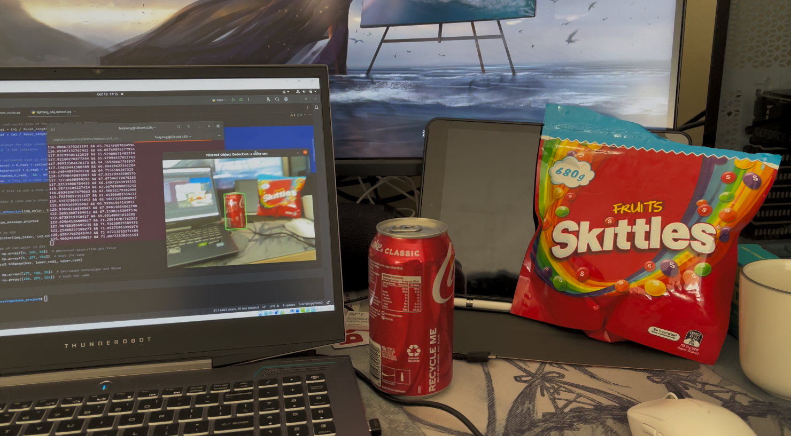
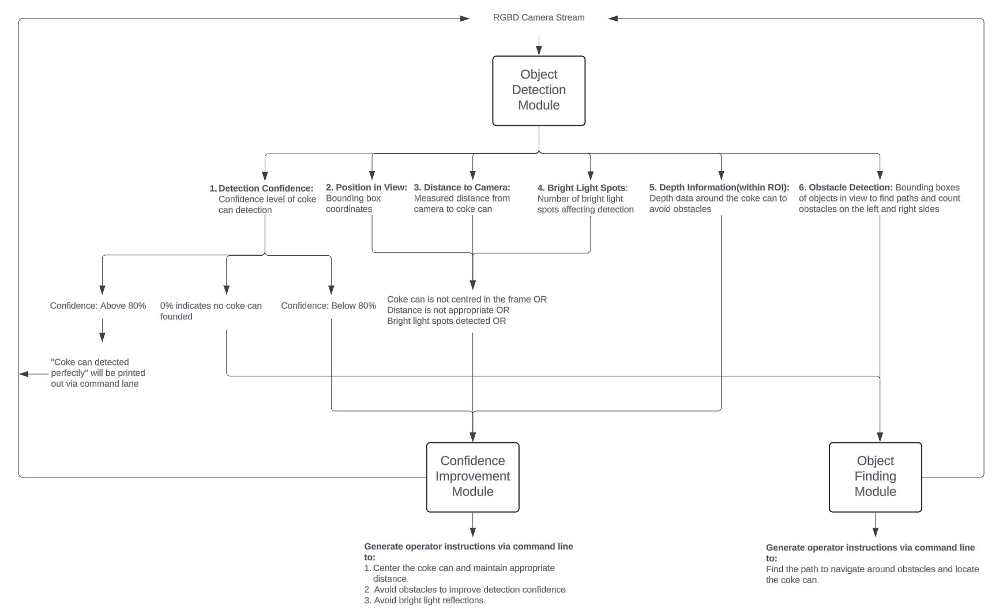
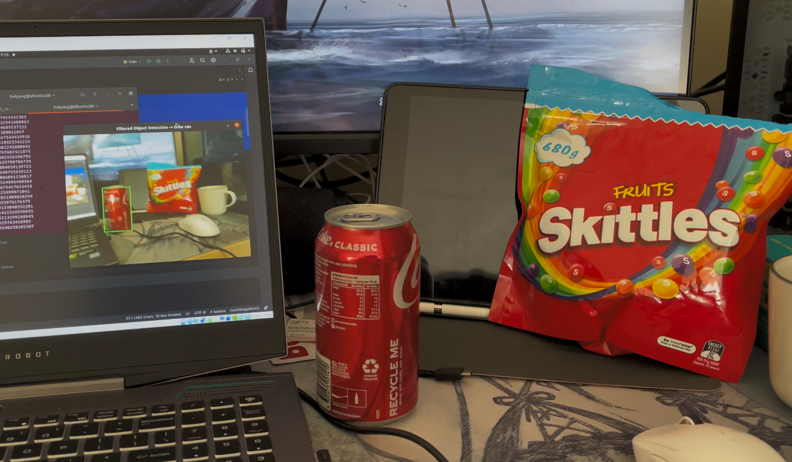
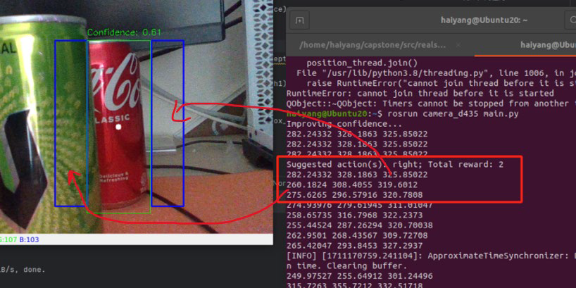
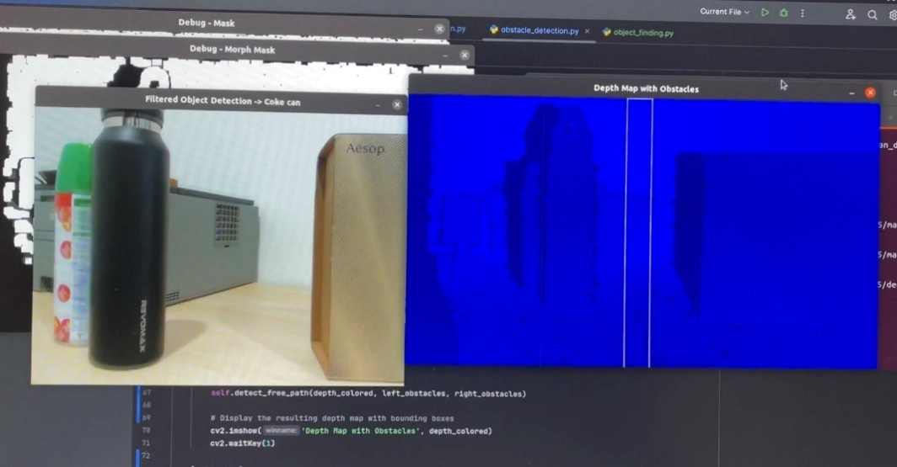
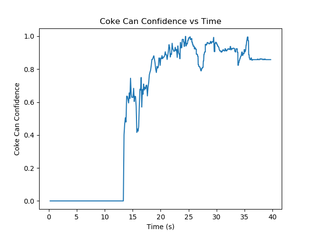
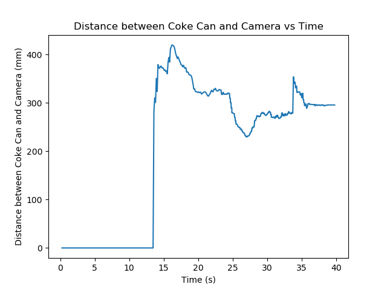
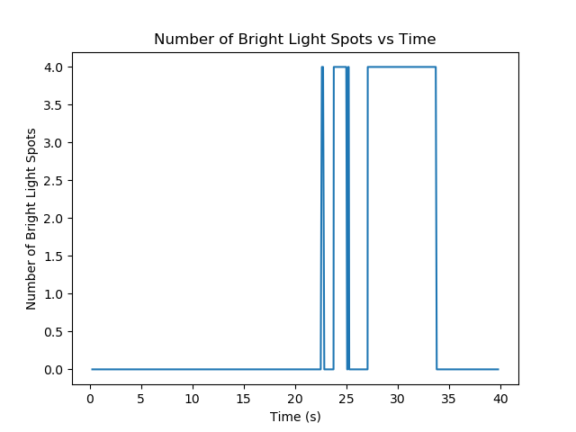

Active RGB-D Camera Positioning for Robust Object Detection
A RealSense D435-based active perception system that dynamically optimises camera viewpoints to improve object detection confidence under occlusion, distance variation, and lighting challenges.

Problem
Detect a target object reliably in cluttered scenes with occlusion, poor viewpoint, and strong light interference.
My Role
Designed the detection logic, confidence improvement strategy, object-finding strategy, and real-time camera guidance workflow.
Outcome
Real-time RGB-D perception system that guided viewpoint adjustments to improve detection reliability and recover hidden targets — >85% confidence in test environments.
System Overview
The system first detects a coke can using HSV colour filtering combined with RealSense depth data, then evaluates whether the current viewpoint is suitable. If confidence is low, it issues movement instructions to improve alignment, reduce occlusion, and avoid glare. If the target is entirely missing, it switches to an exploration mode to search behind obstacles.

Detection Module
The detection pipeline combines HSV colour filtering with depth-based dimension checks to identify a coke can candidate. The colour filter isolates red targets; depth data from the RealSense D435 estimates object size and validates whether the candidate matches expected coke can dimensions.
- HSV masking to isolate target colour range
- Depth-based size validation against known object dimensions
- Bounding box confidence score computed per frame

Confidence Improvement Strategy
When detection confidence drops below threshold, a reward-based strategy prioritises viewpoint adjustments. The system diagnoses whether the object is off-centre, too far, too close, partially occluded, or affected by strong light reflections, then issues the most beneficial corrective camera movement.
- Confidence-driven decision tree for movement selection
- Glare detection via bright pixel density analysis
- Adaptive distance adjustment using depth histogram

Object Finding Strategy
If the target is not detected at all, the system switches to exploration mode. It segments visible objects on left and right sides of the frame, identifies less cluttered directions, and recommends motion paths that guide the camera to search behind obstacles and recover the target.
- Scene segmentation to identify low-clutter search directions
- Iterative sweep strategy for occluded target recovery
- Seamless switch back to confidence-improvement mode on re-detection

Quantitative Results
Detection confidence increased consistently as the camera navigated around obstacles and refined its viewpoint. Additional metrics tracked distance to the target and bright light spot count, demonstrating effective approach behaviour and glare reduction through repositioning.



Key result: >85% detection confidence achieved in test environments with active viewpoint guidance — vs. static camera baselines that plateaued under occlusion.
Future Direction
The current system provides movement guidance to a human operator. It was designed as a foundation for fully autonomous camera control — the next step is closing the loop with direct motor commands. The active perception architecture provides a strong basis for autonomous robotic inspection and manipulation systems.